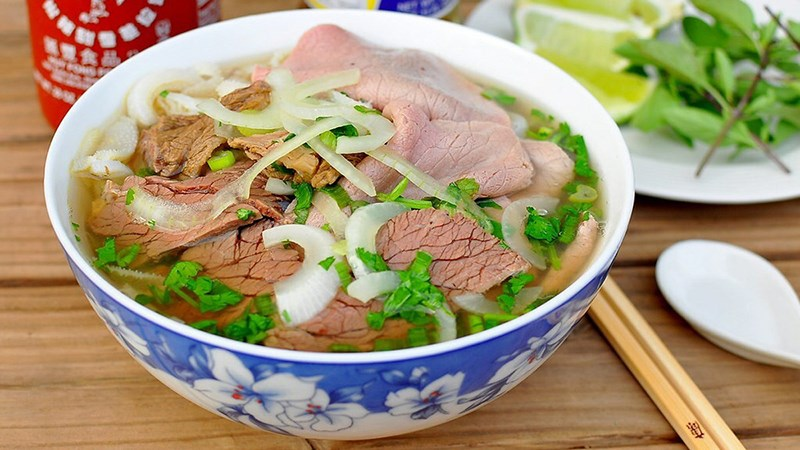

Banh Mi Sai Gon

For the baguette:
All-purpose flour, Water, Sugar, Salt, Yeast, Cooking oil
For the filling (optional): Proteins (ham, cold cuts, pâté, grilled pork, char siu), Vegetables (cucumber, cilantro, pickled carrots, and daikon), Condiments (soy sauce, fish sauce, chili sauce, mayonnaise, butter)
Bun Bo Hue

For the broth:
Beef bones (or pork bones), Beef brisket, flank, Lemongrass, shallots, garlic, ginger, Fermented shrimp paste (mắm ruốc Huế), Chili powder, annatto oil, Salt, sugar, fish sauce, MSG
For the noodles and garnish: Thick rice noodles, Fresh herbs (bean sprouts, shredded water spinach, banana blossom, basil, cilantro), Lime, fresh chili, green onions, sliced onion
Pho

For the broth:
Beef bones (or chicken bones for Pho Ga), Brisket, flank, or chicken, Onion, ginger (charred), Spices (cinnamon, star anise, cloves, cardamom, coriander seeds), Fish sauce, rock sugar, salt
For the noodles and garnish: Rice noodles (Pho noodles), Fresh herbs (cilantro, Thai basil, green onions), Bean sprouts, Lime, fresh chili, hoisin sauce, Sriracha